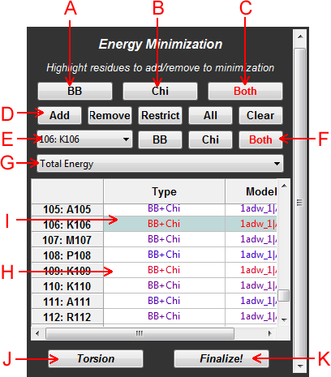
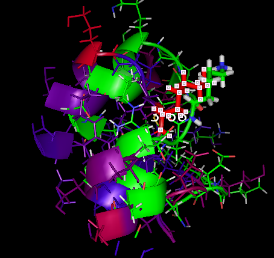

Figure 1: Schematic of a typical energy minimization panel
A: Minimize BB - Click this button to make all additions to the minimization map default to minimize the backbone only.
B: Minimize Chi - Click this button to make all additions to the minimization map default to minimize the sidechains only.
C: Minimize BB+Chi - Click this button to make all additions to the minimization map default to minimize both the backbone and the sidechains.
D: Minimization Map Controls - Add: Add the selected residues to the minimization map with the settings indicated by A-C, Remove: Remove the selected residues from the minimization map, Restrict: Restrict the minimization map to only include the selected residues with the settings indicated by A-C, All: Add all loaded positions to the minimization map with the settings indicated by A-C, Clear: Remove everything from the minimization map.
E: Minimization Map Editor - Use this menu to select entries in the minimization map to view and edit. After a minimization, the view will show the neighborhood of the selected position with residues colored according to energy (blue is the lowest energy, red is the highest), with the original pre-minimized structure shown in green for comparison. The residue is also labeled with the specific energy.

Figure 2: An example of K106 viewed after a minimization. K106 is red, indicating it had one of the highest energies in the structure. The original structure is shown in green.
F: Minimization Editor Controls - Click these buttons to change the type of minimization for the selected residue position.
G: Scoretype Menu - Select the specific scoretype term by which to color the residues in PyMOL.
H: Minimization Map - A table showing the residues that will be minimized and their settings. After a minimization, these settings become colored by the scoretype selected to make it easy to see which residues have good/bad energies
I: Minimization Map Elements - Click on individual elements in the minimization map to select and view them. The minimization map editor (E) will be updated with the selection.
J: Minimization Type - Click on this button to toggle the minimization type between torsion and Cartesian space.
K: Minimize/Finalize Button - Click on this button to start an energy minimization. After minimization, click on it to either accept or reject the outcome. Changes are not saved to the structures in PyMOL until they are accepted with this button.